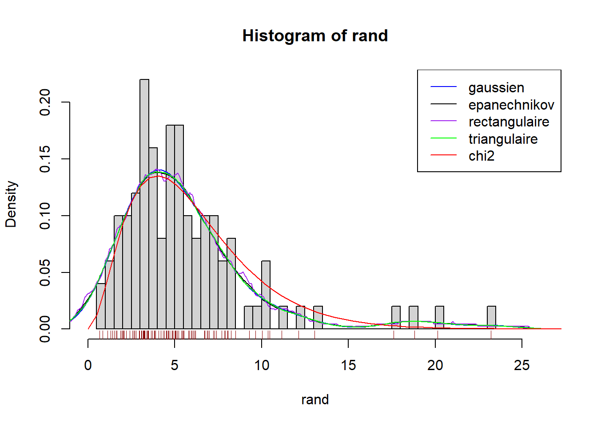
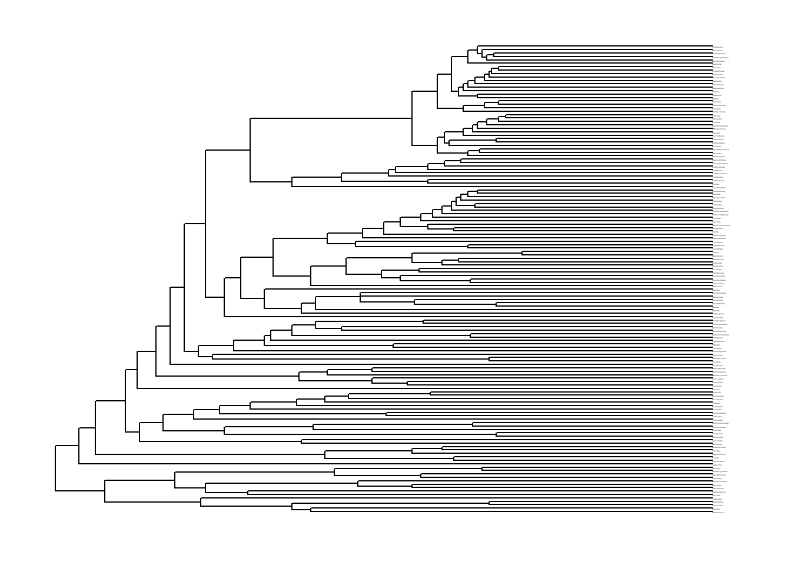
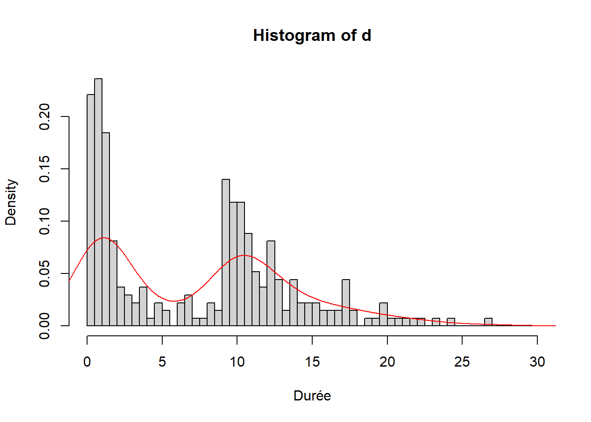
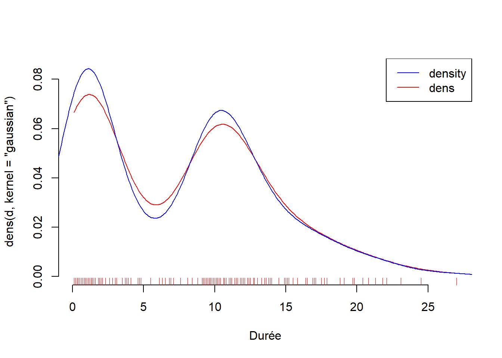
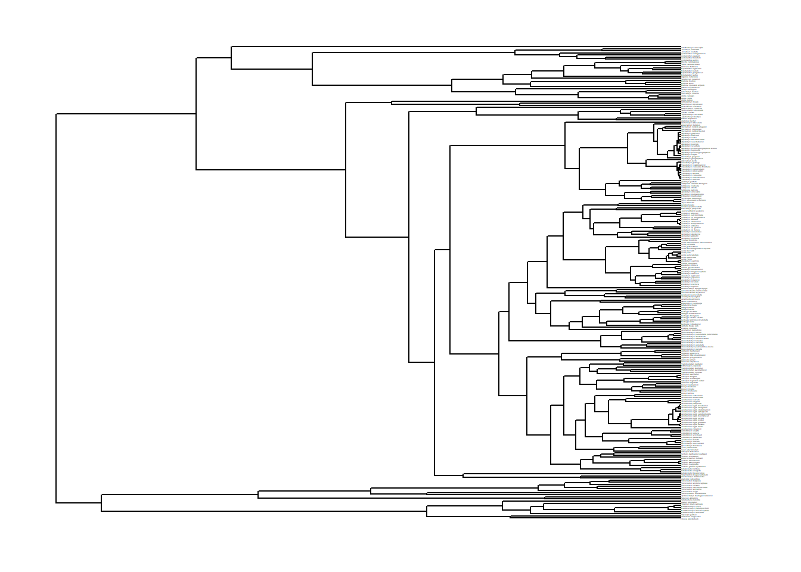
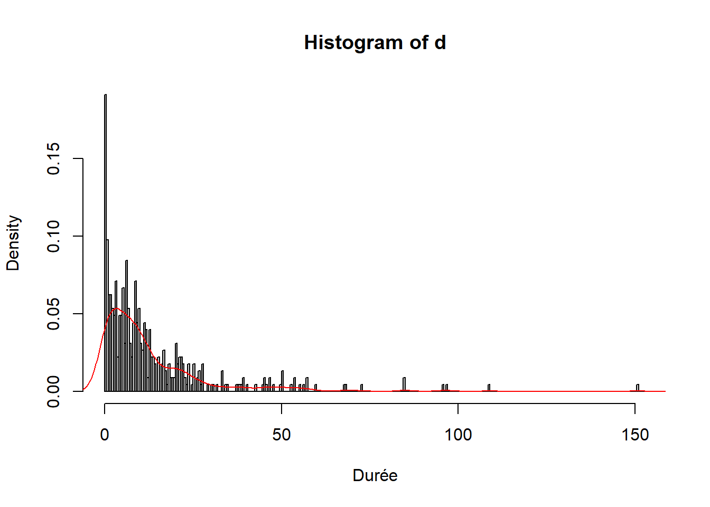
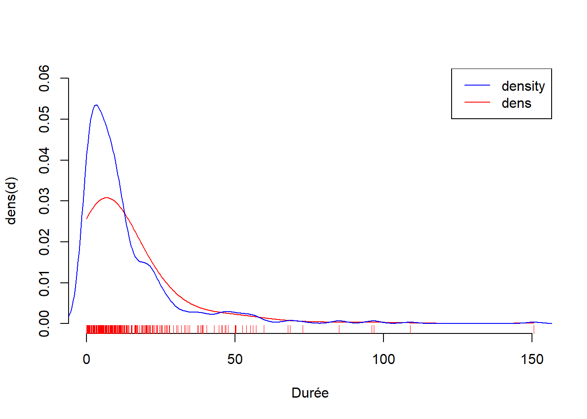

Chapitre 5 Applications
Rappelons que nous cherchons à estimer la fonction de densité \(f\) de la durée avant la création d’une nouvelle espèce. Dans ce cadre nous allons faire nos estimations à noyau de la densité sur R en appliquant la théorie que nous avons vue jusque là.
5.1 Fonction dens
Dans cette partie nous présenterons la fonction dens que nous avons créée en voulant reproduire ce que fait la fonction density de R.
Voici son code :
Insérer le script de fonc_dens.R
5.2 Applications aux données du vivant
Maintenant que nous avons notre fonction dens nous allons pouvoir la comparer à la fonction density de R. Pour les comparer nous allons en profiter pour en même temps les appliquer aux données qu’on veut étudier.
Pour commencer nous allons tester les fonctions avec un premier exemple fictif.
# Estimation de la densité par la méthode des noyaux (Test)
## Chi 2 à 6 ddl
seq <- seq(0,30, length.out = 60)
ychi2 <- dchisq(seq,6)
#plot(seq, ychi2, type = "l", col = "red")
rand <-rchisq(100,6)
hist(rand, breaks = 60, freq = F, xlim=c(0, max(rand)+3))
lines(density(rand, kernel = "epanechnikov", bw = 1), col ="black")
lines(density(rand),col="blue")
lines(density(rand, kernel = "rectangular"), col ="purple")
lines(density(rand, kernel = "triangular"), col ="green")
lines(seq, ychi2, col = "red")
legend("topright",c("gaussien", "epanechnikov", "rectangulaire", "triangulaire", "chi2"),
lty=1, col = c("blue", "black","purple","green","red"))
rug(rand,col="darkred") # Visualisation 1d Comme nous l’avons vu théoriquement, on voit relativement bien ici que la différence au niveau du choix du noyau n’est pas très impactante sur la qualité de l’estimation.
Nous allons maintenant tester les fonctions d’estimation de la densité sur deux exemples.
Commençons par les familles d’oiseaux (bird.families.
# Voici des librairies contenant des arbres phylogénétiques.
library(ape)
library(geiger)
## test avec bird families
### arbre
data("bird.families")
op <- par()
par(cex = 0.3)
plot(bird.families)
par(cex = op$cex)
#### noyau gaussien
d<-bird.families$edge.length
vec <- pretty(0:(max(d)+3),((max(d)+3)*2))
hist(d, breaks = vec, freq = F, xlab = "Durée")
lines(density(d), col = "red") # bw = 1.82
plot(density(d, kernel= "gaussian", window = "gaussian"),
col = "red", bty = "n", xlab = "Durée")
polygon(density(d, kernel= "gaussian"), col=2, border = "blue")
rug(d, col= "red")
## La moyenne de cet échantillon est de : 7.413653## La variance de cet échantillon est de : 38.35033Sur cette échantillon on remarque une répartition bimodale de l’effectif. Effectivement, on observe un mode autour de 1 et un autre autour de 10. On peut supposer en regardant ce tableau que cet échantillon contient des familles d’oiseaux distinctes, ayant suffisamment de différences pour ne pas avoir le même temps d’évolution. C’est pour cela que la moyenne de l’échantillon se trouve au final, là où il y a peu d’individus (moins de \(5\%\)). On remarque aussi que les durée sont relativement concentrées avec une variance de \(38\), elles ne dépassent pas 27.
Maintenant, faisons une autre estimation de la densité sur un échantillon d’espèces de tortues (chelonia).
### test avec chelonia (turtules)
#### arbre
data(chelonia)
op <- par()
par(cex = 0.3)
plot(chelonia$phy)
par(cex = op$cex)
#### noyau gaussien
d<-chelonia$phy$edge.length
#d1<-chelonia$dat
vec <- pretty(0:(max(d)+3), ((max(d)+3)*2))
hist(d, breaks= vec, freq = F, xlab = "Durée")
lines(density(d), col = "red") # bw = 0.201
plot(density(d, kernel= "gaussian"), col = "red", bty = "n")
polygon(density(d, kernel= "gaussian"),col=2,border = "blue")
rug(d, col= "red")
## La moyenne de cet échantillon est de : 12.93598cat("La variance de cet échantillon est de : ", var(d)* (length(d)-1)/length(d)) # estimateur biaisé## La variance de cet échantillon est de : 285.3433Si on compare cet échantillon avec le précédent, on remarque cette fois la distribution est plus étalée (avec une variance de \(258.3\)) et unimodale. Cependant la moyenne n’est pas énormément supérieure à celle des familles d’oiseaux. Cela s’explique par le fait que beaucoup d’espèces de tortue sont apparues en moins de 25 ans et qu’on observe le pic autour de \(1\). On en déduit qu’en moyenne on met plus de temps à obtenir une nouvelle espèce de tortue plutôt qu’une nouvelle espèce d’oiseau.